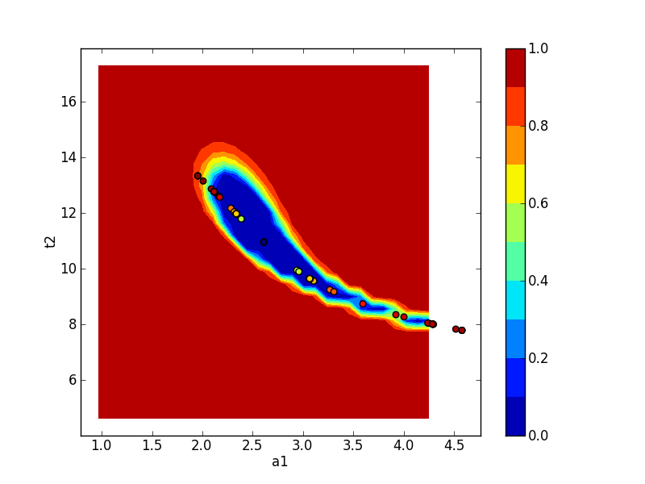

Calculation of confidence intervals¶
The lmfit confidence module allows you to explicitly calculate
confidence intervals for variable parameters. For most models, it is not
necessary since the estimation of the standard error from the estimated
covariance matrix is normally quite good.
But for some models, the sum of two exponentials for example, the approximation
begins to fail. For this case, lmfit has the function conf_interval()
to calculate confidence intervals directly. This is substantially slower
than using the errors estimated from the covariance matrix, but the results
are more robust.
Method used for calculating confidence intervals¶
The F-test is used to compare our null model, which is the best fit we have found, with an alternate model, where one of the parameters is fixed to a specific value. The value is changed until the difference between \(\chi^2_0\) and \(\chi^2_{f}\) can’t be explained by the loss of a degree of freedom within a certain confidence.
N is the number of data points and P the number of parameters of the null model. \(P_{fix}\) is the number of fixed parameters (or to be more clear, the difference of number of parameters between our null model and the alternate model).
Adding a log-likelihood method is under consideration.
A basic example¶
First we create an example problem:
>>> import lmfit
>>> import numpy as np
>>> x = np.linspace(0.3, 10, 100)
>>> np.random.seed(0)
>>> y = 1/(0.1*x) + 2 + 0.1*np.random.randn(x.size)
>>> pars = lmfit.Parameters()
>>> pars.add_many(('a', 0.1), ('b', 1))
>>> def residual(p):
... return 1/(p['a']*x) + p['b'] - y
before we can generate the confidence intervals, we have to run a fit, so that the automated estimate of the standard errors can be used as a starting point:
>>> mini = lmfit.Minimizer(residual, pars)
>>> result = mini.minimize()
>>> print(lmfit.fit_report(result.params))
[[Variables]]
a: 0.09943896 +/- 1.9322e-04 (0.19%) (init = 0.1)
b: 1.98476945 +/- 0.01222678 (0.62%) (init = 1)
[[Correlations]] (unreported correlations are < 0.100)
C(a, b) = 0.601
Now it is just a simple function call to calculate the confidence intervals:
>>> ci = lmfit.conf_interval(mini, result)
>>> lmfit.printfuncs.report_ci(ci)
99.73% 95.45% 68.27% _BEST_ 68.27% 95.45% 99.73%
a: -0.00059 -0.00039 -0.00019 0.09944 +0.00019 +0.00039 +0.00060
b: -0.03766 -0.02478 -0.01230 1.98477 +0.01230 +0.02478 +0.03761
This shows the best-fit values for the parameters in the _BEST_ column, and parameter values that are at the varying confidence levels given by steps in \(\sigma\). As we can see, the estimated error is almost the same, and the uncertainties are well behaved: Going from 1 \(\sigma\) (68% confidence) to 3 \(\sigma\) (99.7% confidence) uncertainties is fairly linear. It can also be seen that the errors are fairy symmetric around the best fit value. For this problem, it is not necessary to calculate confidence intervals, and the estimates of the uncertainties from the covariance matrix are sufficient.
An advanced example¶
Now we look at a problem where calculating the error from approximated covariance can lead to misleading result – two decaying exponentials. In fact such a problem is particularly hard for the Levenberg-Marquardt method, so we first estimate the results using the slower but robust Nelder-Mead method, and then use Levenberg-Marquardt to estimate the uncertainties and correlations.
#!/usr/bin/env python
# <examples/doc_confidence_advanced.py>
import numpy as np
import matplotlib.pyplot as plt
import lmfit
x = np.linspace(1, 10, 250)
np.random.seed(0)
y = 3.0*np.exp(-x/2) - 5.0*np.exp(-(x-0.1)/10.) + 0.1*np.random.randn(len(x))
p = lmfit.Parameters()
p.add_many(('a1', 4.), ('a2', 4.), ('t1', 3.), ('t2', 3.))
def residual(p):
return p['a1']*np.exp(-x/p['t1']) + p['a2']*np.exp(-(x-0.1)/p['t2']) - y
# create Minimizer
mini = lmfit.Minimizer(residual, p, nan_policy='omit')
# first solve with Nelder-Mead
out1 = mini.minimize(method='Nelder')
# then solve with Levenberg-Marquardt using the
# Nelder-Mead solution as a starting point
out2 = mini.minimize(method='leastsq', params=out1.params)
lmfit.report_fit(out2.params, min_correl=0.5)
ci, trace = lmfit.conf_interval(mini, out2, sigmas=[1, 2],
trace=True, verbose=False)
lmfit.printfuncs.report_ci(ci)
plot_type = 2
if plot_type == 0:
plt.plot(x, y)
plt.plot(x, residual(out2.params) + y)
elif plot_type == 1:
cx, cy, grid = lmfit.conf_interval2d(mini, out2, 'a2', 't2', 30, 30)
plt.contourf(cx, cy, grid, np.linspace(0, 1, 11))
plt.xlabel('a2')
plt.colorbar()
plt.ylabel('t2')
elif plot_type == 2:
cx, cy, grid = lmfit.conf_interval2d(mini, out2, 'a1', 't2', 30, 30)
plt.contourf(cx, cy, grid, np.linspace(0, 1, 11))
plt.xlabel('a1')
plt.colorbar()
plt.ylabel('t2')
elif plot_type == 3:
cx1, cy1, prob = trace['a1']['a1'], trace['a1']['t2'], trace['a1']['prob']
cx2, cy2, prob2 = trace['t2']['t2'], trace['t2']['a1'], trace['t2']['prob']
plt.scatter(cx1, cy1, c=prob, s=30)
plt.scatter(cx2, cy2, c=prob2, s=30)
plt.gca().set_xlim((2.5, 3.5))
plt.gca().set_ylim((11, 13))
plt.xlabel('a1')
plt.ylabel('t2')
if plot_type > 0:
plt.show()
# <end examples/doc_confidence_advanced.py>
which will report:
[[Variables]]
a1: 2.98622120 +/- 0.14867187 (4.98%) (init = 2.986237)
a2: -4.33526327 +/- 0.11527506 (2.66%) (init = -4.335256)
t1: 1.30994233 +/- 0.13121177 (10.02%) (init = 1.309932)
t2: 11.8240351 +/- 0.46316470 (3.92%) (init = 11.82408)
[[Correlations]] (unreported correlations are < 0.500)
C(a2, t2) = 0.987
C(a2, t1) = -0.925
C(t1, t2) = -0.881
C(a1, t1) = -0.599
95.45% 68.27% _BEST_ 68.27% 95.45%
a1: -0.27286 -0.14165 2.98622 +0.16353 +0.36343
a2: -0.30444 -0.13219 -4.33526 +0.10688 +0.19683
t1: -0.23392 -0.12494 1.30994 +0.14660 +0.32369
t2: -1.01943 -0.48820 11.82404 +0.46041 +0.90441
Again we called conf_interval(), this time with tracing and only for
1- and 2-\(\sigma\). Comparing these two different estimates, we see
that the estimate for a1 is reasonably well approximated from the
covariance matrix, but the estimates for a2 and especially for t1, and
t2 are very asymmetric and that going from 1 \(\sigma\) (68%
confidence) to 2 \(\sigma\) (95% confidence) is not very predictable.
Plots of the confidence region are shown in the figures below for a1 and t2 (left), and a2 and t2 (right):

{kind=link}
Neither of these plots is very much like an ellipse, which is implicitly assumed by the approach using the covariance matrix.
The trace returned as the optional second argument from
conf_interval() contains a dictionary for each variable parameter.
The values are dictionaries with arrays of values for each variable, and an
array of corresponding probabilities for the corresponding cumulative
variables. This can be used to show the dependence between two
parameters:
>>> x, y, prob = trace['a1']['a1'], trace['a1']['t2'], trace['a1']['prob']
>>> x2, y2, prob2 = trace['t2']['t2'], trace['t2']['a1'], trace['t2']['prob']
>>> plt.scatter(x, y, c=prob ,s=30)
>>> plt.scatter(x2, y2, c=prob2, s=30)
>>> plt.gca().set_xlim((2.5, 3.5))
>>> plt.gca().set_ylim((11.5, 12.5))
>>> plt.xlabel('a1')
>>> plt.ylabel('t2')
>>> plt.show()
which shows the trace of values:
{kind=link}
The Minimizer.emcee() method uses Markov Chain Monte Carlo to sample
the posterior probability distribution. These distributions demonstrate the
range of solutions that the data supports. The following image was obtained
by using Minimizer.emcee() on the same problem.
Credible intervals (the Bayesian equivalent of the frequentist confidence interval) can be obtained with this method. MCMC can be used for model selection, to determine outliers, to marginalise over nuisance parameters, etcetera. For example, you may have fractionally underestimated the uncertainties on a dataset. MCMC can be used to estimate the true level of uncertainty on each datapoint. A tutorial on the possibilities offered by MCMC can be found at [1].
| [1] | https://jakevdp.github.io/blog/2014/03/11/frequentism-and-bayesianism-a-practical-intro/ |
Confidence Interval Functions¶
-
conf_interval(minimizer, result, p_names=None, sigmas=(1, 2, 3), trace=False, maxiter=200, verbose=False, prob_func=None)¶ Calculate the confidence interval for parameters.
The parameter for which the ci is calculated will be varied, while the remaining parameters are re-optimized to minimize chi-square. The resulting chi-square is used to calculate the probability with a given statistic (e.g., F-test). This function uses a 1d-rootfinder from SciPy to find the values resulting in the searched confidence region.
Parameters: - minimizer (Minimizer) – The minimizer to use, holding objective function.
- result (MinimizerResult) – The result of running minimize().
- p_names (list, optional) – Names of the parameters for which the ci is calculated. If None, the ci is calculated for every parameter.
- sigmas (list, optional) – The sigma-levels to find. Default is [1, 2, 3]. See Note below.
- trace (bool, optional) – Defaults to False, if True, each result of a probability calculation is saved along with the parameter. This can be used to plot so-called “profile traces”.
- maxiter (int, optional) – Maximum of iteration to find an upper limit. Default is 200.
- verbose (bool, optional) – Print extra debuging information. Default is False.
- prob_func (None or callable, optional) – Function to calculate the probability from the optimized chi-square. Default is None and uses built-in f_compare (F-test).
Returns: - output (dict) – A dictionary that contains a list of (sigma, vals)-tuples for each name.
- trace_dict (dict, optional) – Only if trace is True. Is a dict, the key is the parameter which was fixed. The values are again a dict with the names as keys, but with an additional key ‘prob’. Each contains an array of the corresponding values.
Note
The values for sigma are taken as the number of standard deviations for a normal distribution and converted to probabilities. That is, the default
sigma=(1, 2, 3)will use probabilities of 0.6827, 0.9545, and 0.9973. If any of the sigma values is less than 1, that will be interpreted as a probability. That is, a value of 1 and 0.6827 will give the same results, within precision.See also
Examples
>>> from lmfit.printfuncs import * >>> mini = minimize(some_func, params) >>> mini.leastsq() True >>> report_errors(params) ... #report >>> ci = conf_interval(mini) >>> report_ci(ci) ... #report
Now with quantiles for the sigmas and using the trace.
>>> ci, trace = conf_interval(mini, sigmas=(0.5, 1, 2, 3), trace=True) >>> fixed = trace['para1']['para1'] >>> free = trace['para1']['not_para1'] >>> prob = trace['para1']['prob']
This makes it possible to plot the dependence between free and fixed parameters.
-
conf_interval2d(minimizer, result, x_name, y_name, nx=10, ny=10, limits=None, prob_func=None)¶ Calculate confidence regions for two fixed parameters.
The method itself is explained in conf_interval: here we are fixing two parameters.
Parameters: - minimizer (Minimizer) – The minimizer to use, holding objective function.
- result (MinimizerResult) – The result of running minimize().
- x_name (str) – The name of the parameter which will be the x direction.
- y_name (str) – The name of the parameter which will be the y direction.
- nx (int, optional) – Number of points in the x direction.
- ny (int, optional) – Number of points in the y direction.
- limits (tuple, optional) – Should have the form ((x_upper, x_lower), (y_upper, y_lower)). If not given, the default is 5 std-errs in each direction.
- prob_func (None or callable, optional) – Function to calculate the probability from the optimized chi-square. Default is None and uses built-in f_compare (F-test).
Returns: - x (numpy.ndarray) – X-coordinates (same shape as nx).
- y (numpy.ndarray) – Y-coordinates (same shape as ny).
- grid (numpy.ndarray) – Grid containing the calculated probabilities (with shape (nx, ny)).
Examples
>>> mini = Minimizer(some_func, params) >>> result = mini.leastsq() >>> x, y, gr = conf_interval2d(mini, result, 'para1','para2') >>> plt.contour(x,y,gr)
-
ci_report(ci, with_offset=True, ndigits=5)¶ Return text of a report for confidence intervals.
Parameters: Returns: Text of formatted report on confidence intervals.
Return type: